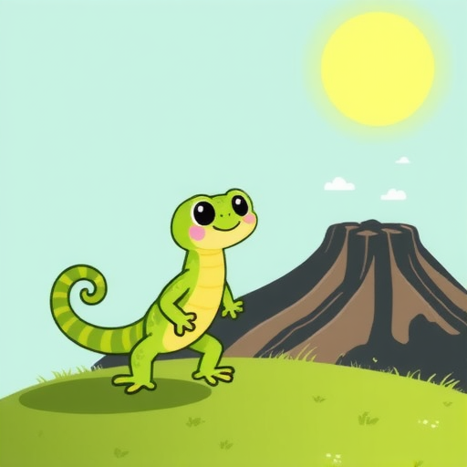
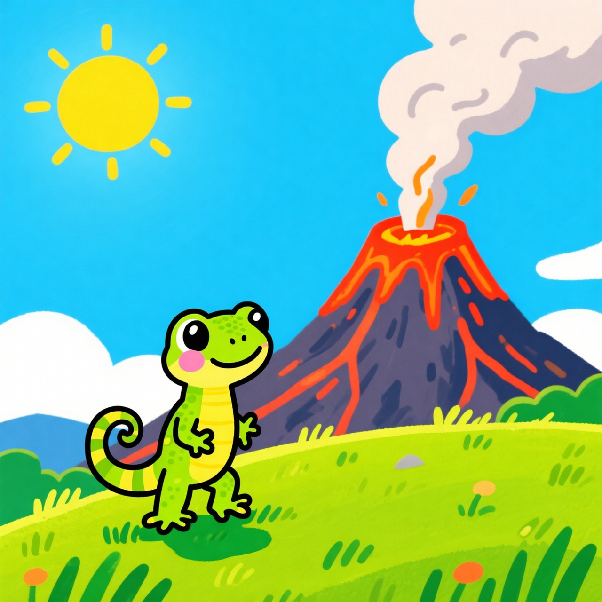
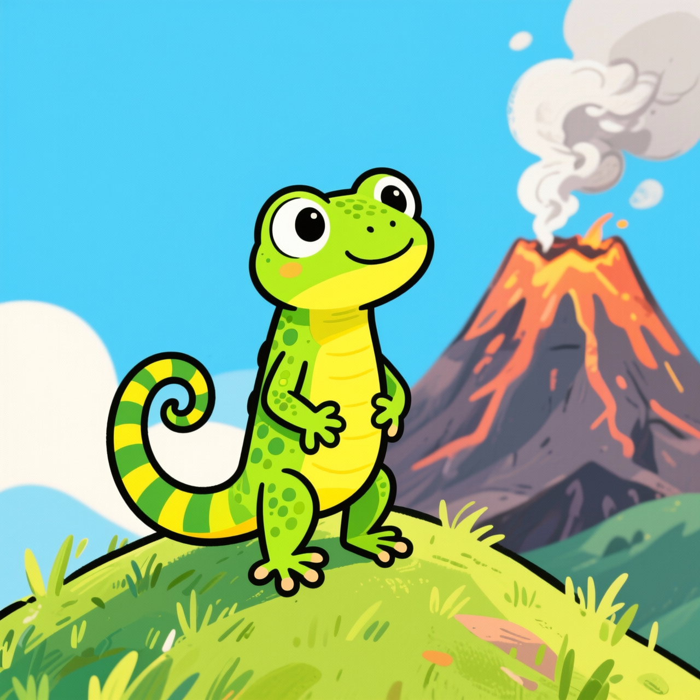
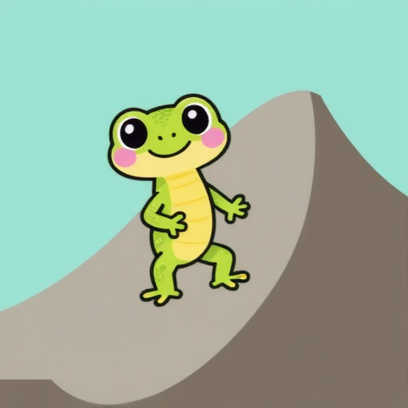
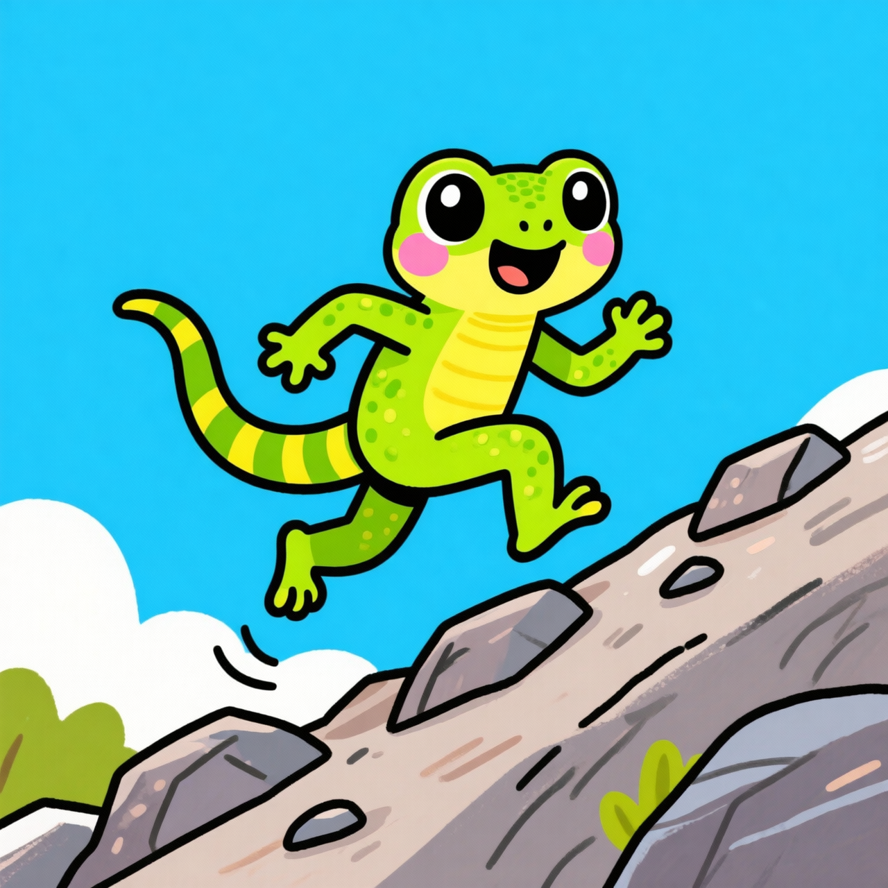
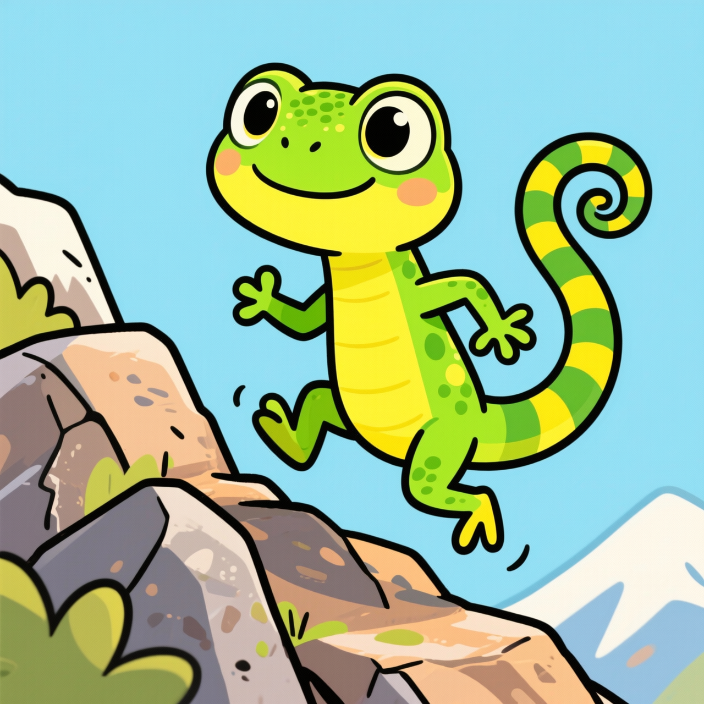
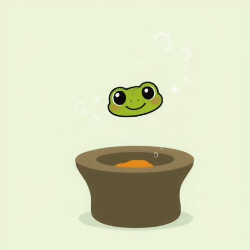
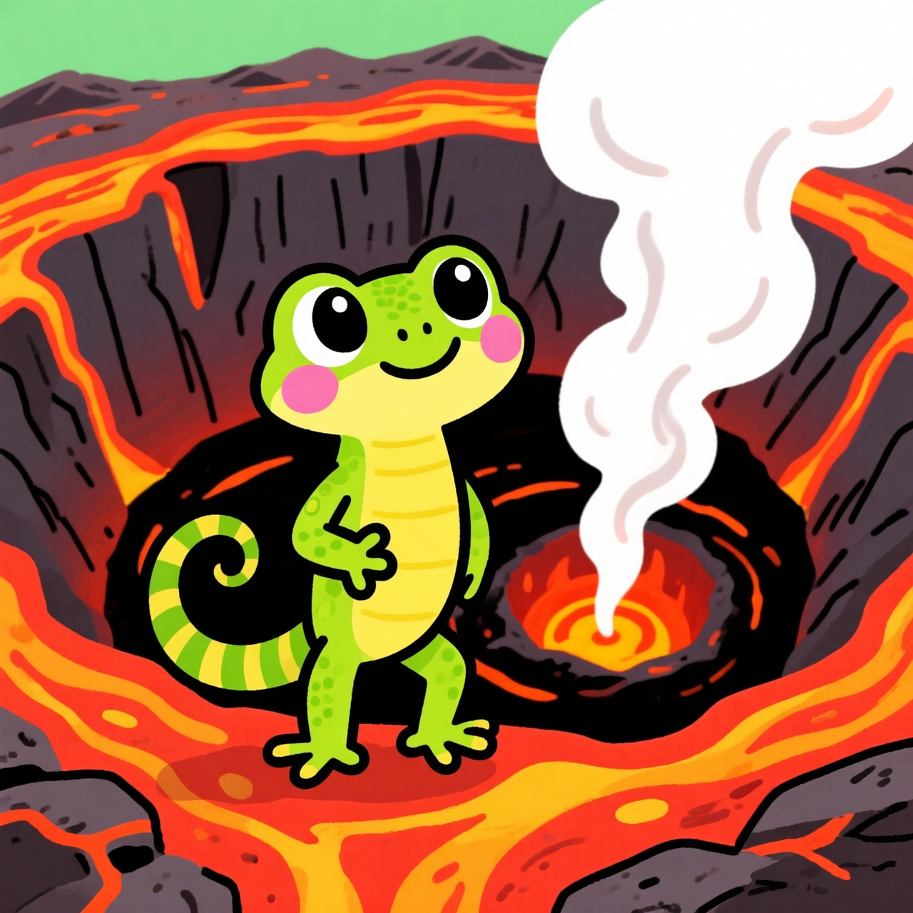
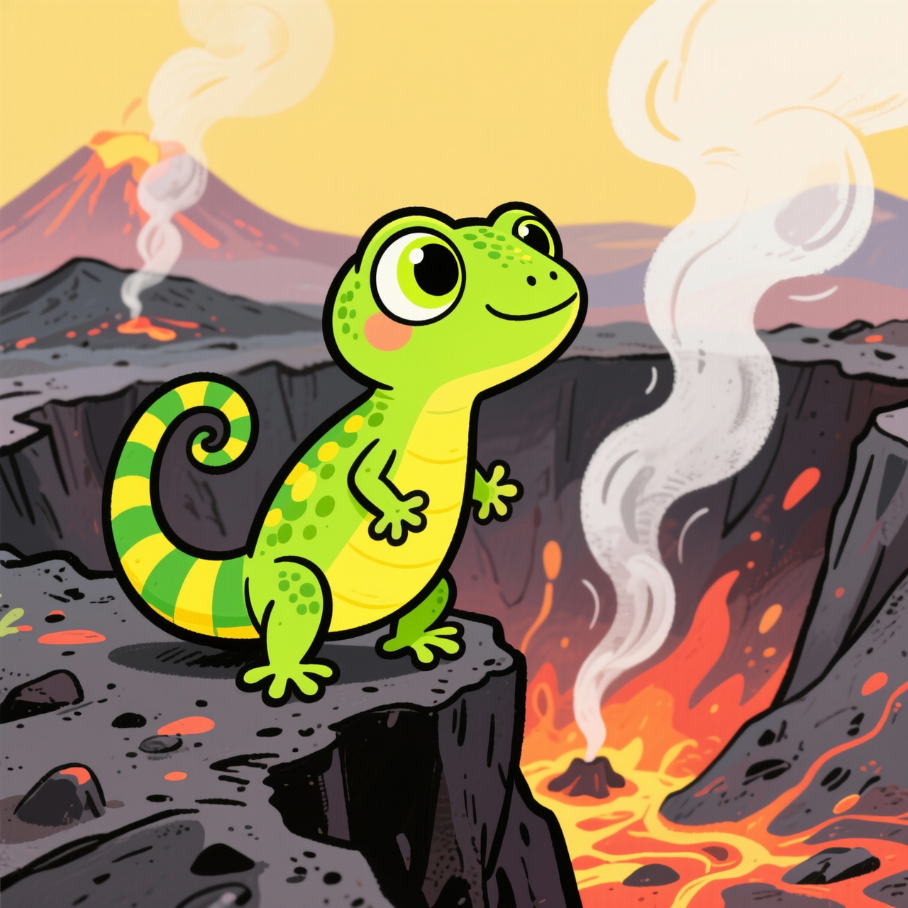

Model Comparison: Character Consistency
Same reference image tested across Flux Kontext (image-ref), Wan2.5 I2I (image-ref), Wan2.6 T2I (text), Nano Banana (text)
Reference Image

Wan2.6 Hero - used as reference for image-ref models
Scene 1: Volcano Hill

Flux KontextImage reference

Wan2.5 I2IImage-to-image

Wan2.6 T2IText only

Nano BananaText only
Scene 2: Running Up Slope

Flux KontextImage reference

Wan2.5 I2IImage-to-image

Wan2.6 T2IText only
Nano BananaText only
Scene 3: Crater Edge

Flux KontextImage reference

Wan2.5 I2IImage-to-image

Wan2.6 T2IText only

Nano BananaText only
Findings
| Model | Method | Time | Consistency | Notes |
|---|---|---|---|---|
| Flux Kontext | Image ref | ~10s | ★★★★☆ | Good but style varies |
| Wan2.5 I2I | Image ref | ~50s | ★★★☆☆ | Transforms reference |
| Wan2.6 T2I | Text only | ~16s | ★★★☆☆ | Fast, decent consistency |
| Nano Banana | Text only | ~45s | ★★☆☆☆ | Beautiful but varies |